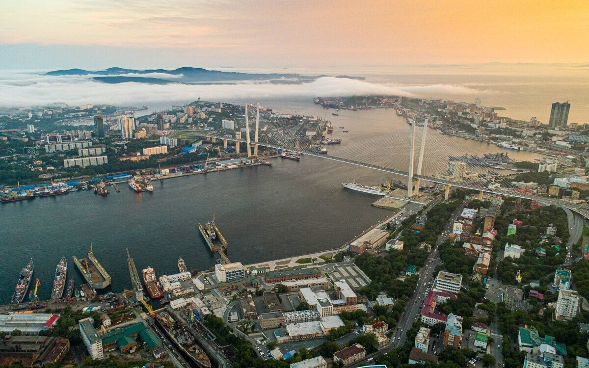

Впервые об острове Русском узнали в середине позапрошлого века, примерно тогда же началось его бурное развитие. Помимо военных, тут проживали и обычные земледельцы, чьими трудами возделывались поля и снабжался урожаем не только остров, но и развивающийся город. В советскую эпоху доступ для простых людей на Русский оказался под запретом ввиду располагавшихся здесь военных баз, но после распада СССР он утратил стратегическое значение. Постепенно остров облюбовали люди, приезжающие сюда дабы оказаться вдали от городской суеты. Красота природы и теплые воды Японского моря делают Русский идеальным для отдыха и слияния с природой. Присутствуют на острове и несколько интересных достопримечательностей, заслуживающих отдельного рассказа.


На южном крае острова Русский расположился мыс Тобизина, названный в честь, лейтенанта, посвятившего несколько лет жизни службе на Дальнем Востоке. До появления моста попасть сюда было довольно проблематично и место не пользовалось особой популярностью у туристов, но сегодня всё кардинально изменилось. Можно увидеть сотни фотографий мыса Тобизина, но ни одна из них не передаст всей мощи и силы, ощущаемой во время непосредственного нахождения здесь. Виды завораживают, а рука так и тянется за камерой, чтобы сделать несколько снимков на память. До недавнего времени на мысе можно было увидеть и небольшой маяк, одиноко стоявший здесь с 1977 года. В 2020 во время шторма старая и ржавая конструкция не выдержала и упала, и до сих пор не понятно, восстановят ли в обозримом будущем эту достопримечательность.
Подробнее »